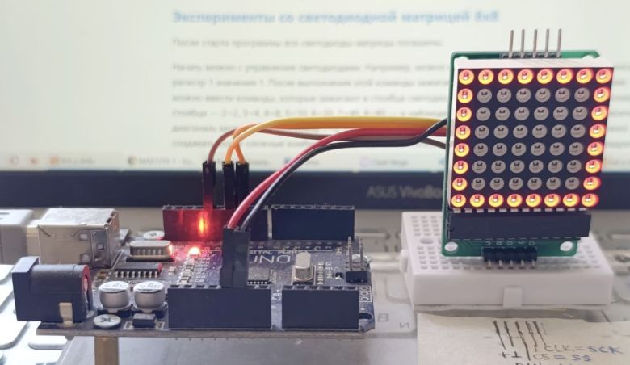
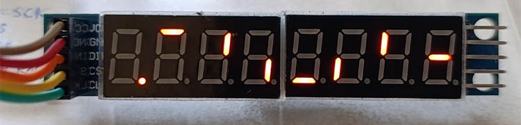
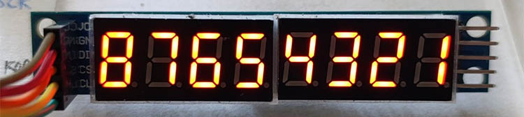
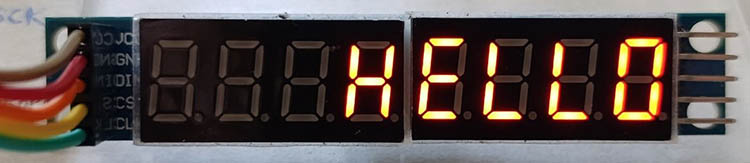

Микросхема MAX7219 управляет светодиодной матрицей по трём проводам
Семисегментный светодиодный индикатор на деле восьмисегментный и требует для подключения к Arduino девяти проводов, так что уже для двух независимых индикаторов на Arduino UNO не хватит выходов. Если соединить одноимённые сегменты индикаторов и использовать динамическую индикацию (она разобрана в этом и этом этюдах), то можно обслуживать четырёхразрядный индикатор, а на пятиразрядный опять не хватит. Проблема нехватки портов решается по-разному, и один из удобных способов — испольование специализированных микросхем с последовательным интерфейсом, например, микросхемы 7219, разработанной в 1990-х годах компанией Maxim Integrated (ныне часть Analog Devices). Микросхема подключается к Arduino всего тремя проводами, не считая питания и земли, и позволяет управлять матрицей из восьми групп по восемь светодиодов с общим катодом [1]. MAX7219 берёт на себя всю работу по организации динамической индикации, в микросхеме есть своя память, для подключения индикатора не нужны резисторы, управление яркостью и другими параметрами идёт через тот же трёхпроводной интерфейс — от пользователя требуется лишь передать данные для отображения.
Задача
С целью знакомства с MAX7219 подключить её к Arduino и написать программу, позволяющую отправлять в MAX7219 управляющие команды с компьютера. Наблюдать результат на подключённой к MAX7219 светодиодной матрице 8x8.
Принцип
Управляющие команды и данные передаются в MAX7219 из Arduino через интерфейс SPI (Serial Peripheral Interface, последовательный интерфейс периферийных устройств [2]). В нём две линии, МOSI и MISO, для передачи — из ведущего в ведомое устройство и из ведомого в ведущее; линия SCK тактового сигнала; линия SS сигнала разрешения. Чтобы ведомое устройство могло принять данные, на его линии SS необходимо установить низкий уровень, на линиях SS других ведомых устройств высокий уровень — так выполняется выбор устройства, адресов у устройств на шине SPI нет. MAX7219 только принимает данные и ничего не передаёт, поэтому линия MISO в решаемой задаче не используется, достаточно трёх проводов.
MAX7219 рассчитана на подключенин светодиодной матрицы произвольного размера до 8х8. Удобно считать линии катодов столбцами матрицы, линии анодов строками. Столбцы подключают к выводам DIG 1 - DIG 8 микросхемы, строки к выводам SEG a - SEG h. Микросхема без участия внешнего процессора реализует динамическую индикацию: поочерёдно активирует столбцы, подключая их к земле, и одновременно выставляет на линиях строк уровни согласно ранее записанному в память байту, указывающему, какие светодиоды в текущем столбце зажечь, а какие погасить.
Работой MAX7219 управляют, записывая данные в её 8-битные управляющие регистры, которых 14 и которые имеют адреса 0..c, f (нет регистров с адресами d и e). Байт в регистре с адресом i (i=1...8) указывает, какие светодиоды должны светиться в столбце i. Регистр с адресом a управляет яркостью, регистр с адресом с может выключить индикатор и перевести микросхему в спящее состояние с очень малым энергопотреблением. Подробнее о назначении регистров в [1, 4], а также ниже здесь.
Реализация
Arduino UNO, MAX7219 и светодиодная матрица соединены согласно нижеприведённой схеме. MAX7219 подключена к Arduino через аппаратную шину SPI. Плата Arduino подключена к компьютеру через USB, на компьютере запущена Arduino IDE. Пользователь вводит команды для управления MAX7219 и матрицей в мониторе последовательного порта.
Команда представляет собой выражение адрес_регистра=значение_для_записи_в_этот_регистр. Адреc — шестнадцатеричное число 0...f, значение — шестнадцатеричное число 0...ff. Длина адреса и значения 1 или 2 символа, допускается один незначащий нуль и верхний регистр букв. Например, чтобы записать в регистр с адресом 1 значение 1, следует ввести команду 1=1. Также поддерживается команда ?= для вывода краткой информации о программе.
Для передачи через аппаратную шину SPI используется библиотека SPI. В setup() инициализируют SPI:
const uint8_t PIN_CS_MASK = 0b100; // маска пина Ардуино, к которому подключена линия SS (пин 10)
SPI.begin();
DDRB |= PIN_CS_MASK; // пин линии SS настроить как выход
PORTB |= PIN_CS_MASK; // установить высокий уровень на линии SS — запретить MAX7219 работу через SPI
Передача в MAX7219 содержит следующие действия:
void writeTo7219(uint8_t reg, uint8_t data) { // передача в MAX7219
PORTB &= ~PIN_CS_MASK; // установить низкий уровень на линии SS — разрешить MAX7219 работу через SPI
SPI.transfer(reg); // передать адрес регистра, куда будут записываться данные
SPI.transfer(data); // передать данные
PORTB |= PIN_CS_MASK;} // установить высокий уровень на линии SS — запретить MAX7219 работу через SPI
Программа для Arduino, прилагаемая к этому этюду, даёт возможность экспериментировать, отправляя с клавиатуры компьютера в MAX7219 данные для отображения на светодидной матрице и меняя режимы, и сразу видеть результат.
Электрическая схема

Эксперименты со светодиодной матрицей 8x8
После старта программы все светодиоды матрицы погашены.
Начать можно с управления светодиодами. Например, можно ввести команду 1=1. Она означает запись в регистр 1 значения 1. После выполнения этой команды зажигается угловой светодиод матрицы. Далее можно ввести команды, которые зажигают в столбце светодиод, номер которого в столбце равен номеру столбца — 2=2, 3=4, 4=8, 5=10, 6=20, 7=40, 8=80 — и наблюдать горящую диагональ матрицы. Погасить диагональ можно вводом команд 1=0, 2=0, ..., 8=0. Записывая определённые значения в регистры 1-8, можно создавать более сложные комбинации светящихся пикселов матрицы. Например, чтобы зажечь квадрат по границам матрицы, следует ввести команды 1=ff, 2=81, 3=81, ..., 7=81, 8=ff.
Далее можно попробовать управление яркостью. Для этого служит регистр с адресом a, в нём значения от 0 до f определяют 16 возможных градаций яркости. Например, команда a=0 установит минимальную яркость матрицы, а a=f максимальную.
Нуль в регистре с адресом c гасит матрицу и переводит MAX7219 в режим минимального энергопотребления, но информация, ранее записанная в регистры 1..8, при этом сохраняется. После восстановления рабочего режима командой c=1 изображение на матрице восстанавливается.
Регистр с адресом f предназначен для тестирования матрицы. Команда f=1 зажжет все светодиоды на максимальной яркости. После ввода команды f=0 восстанавливается прежняя яркость матрицы и изображение на ней.

Эксперименты с восьмиразрядным цифровым индикатором
Электрическая схема многоразрядного светодиодного семисегментного индикатора — та же светодиодная матрица, вполне согласующаяся с MAX7219. В микросхеме есть специальные регистры и режимы для работы с индикатором. На вышеприведённой электрической схеме столбец следует интерпретировать как разряд индикатора, а строку как группу одноимённых сегментов. Катоды разрядов подключают к выводам DIG0..7, сегменты к выводам SEGa..h
После старта программы индикатор погашен. Для начала можно, как в предыдущем разделе, ввести последовательно команды 1=1, 2=2, 3=4, 4=8, 5=10, 6=20, 7=40, 8=80. Наблюдаемая картина показывает, что разряд 1 крайний правый (младший), разряд 8 крайний левый (старший), значение 1 соответствует сегменту G, 2 сегменту F, ..., 40 сегменту A, 80 сегменту H (точке).

Далее можно погасить все разряды последовательным вводом команд 1=0, 2=0, ..., 8=0 и зажигать в разрядах цифры и знаки. Например, чтобы зажечь в разряде 3 цифру 8 с точкой, т.е. зажечь все сегменты, надо записать в регистр 3 значение ff (двоичное 11111111), т.е. ввести команду 3=ff. Чтобы погасить точку, надо в записываемом в регистр байте сбросить старший разряд: 3=7f (01111111). Чтобы отобразить нуль, надо погасить сегмент G, т.е. передать команду 3=7e (01111110). Чтобы отобразить 1, надо зажечь только сегменты B и C, т.е. передать значение 00110000, иными словами, послать команду 3=30.
Однако можно и не вычислять коды для отображения цифр. В MAX7219 предусмотрен специальный режим, в котором для отображения цифры надо передавать не код, а саму цифру. Этот режим называется режимом с декодированием и включается индивидуально для каждого разряда. Режимы разрядов хранятся в регистре с адресом 9 в виде байта, каждый бит которого указывает режим для соответствующего разряда. Значение бита 0 означает обычный режим, 1 — режим с декодированием. Для эксперимента можно включить режим с декодированием для всех разрядов индикатора командой 9=ff. После этого можно вводить команды 1=1, 2=2, ..., 8=8 и наблюдать результат:

В режиме без декодирования значение 0 гасит разряд. В режиме с декодированием 0 вызывает отображение нуля, а чтобы погасить разряд, надо передать f. В режиме с декодированием также предусмотрены значения для отображения символов минус, E, H, L, P (a-e соответственно). Например, передав команды 1=0, 2=d, 3=d, 4=b, 5=c, можно вывести на индикатор слово HELLO:

Передавая в регистр с адресом b значения от 0 до 7, можно ограничивать количество активных разрядов индикатора от 1 до 8. Например, если передать команду b=3, то активными, то есть участвующими в динамической индикации и отображающими информацию, будут четыре разряда, начиная с младшего. При уменьшении количества активных индикаторов увеличивается яркость.
Регистр с адресом 0 используется при соединении нескольких MAX7219 в единую систему, чему посвящён следующий этюд.
Как получить информацию о командах
Команда ?= выведет общую информацию о программе и командах.
Файлы
Текст программы содержится в файле Ind_y_Ardu.ino, который можно получить с Github по ссылке.
Как вариант, для получения файла можно взять с Github весь репозиторий цикла "Ардуино и индикаторы" и выполнить команду git restore -s MAX7219_1 -- Ind_y_Ardu.ino
Дополнительная информация
- MAX7219 datasheet. https://www.alldatasheet.com/d..
- Интерфейс SPI. https://alexgyver.ru/lessons/spi/
- Библиотека SPI. https://alexgyver.ru/lessons/ardu-spi/
- MAX7219 – драйвер светодиодных индикаторов. https://radiolaba.ru/ma...
- SPI — краткое руководство. https://wiki.iarduino.ru/page/spi-short-guide/
- Соединение нескольких устройств через SPI. https://habr.com/ru/companies/first/articles/661511/